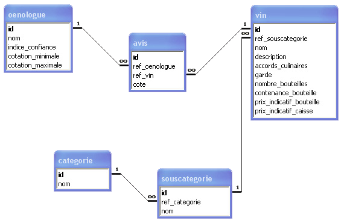

Le programme doit permettre à l'utilisateur :
- d'ajouter, modifier, supprimer des oenologues :
- les informations éditables sont :
- le nom, un texte de 3 à 120 caractères et devant être unique
- l'indice de confiance, une valeur réelle représentant un pourcentage, donc devant être comprise entre 0% et 100% (0.0 et 1.0)
- la cotation minimale, une valeur entière >= 0 et <= à la cotation maximale
- la cotation maximale, une valeur entière >= à la cotation minimale et <= 1000
- l'ajout et la modification doivent permettre l'édition de ces valeurs en toute sécurité
- la suppression d'un oenologue doit entraîner la suppression en cascade des avis qu'il a pu émettre sur les vins
- d'ajouter, modifier, supprimer des vins :
- les informations éditables sont :
- le nom, un texte de 3 à 160 caractères et devant être unique
- la sous-catégorie à laquelle appartient le vin ; une sélection parmi les sous-catégories existantes semble être un choix opportun
- la garde conseillée, les accords culinaires proposés et la description du vin, des textes optionnels et sans limite particulière de taille
- le nombre de bouteilles que contient une caisse, un nombre entier compris entre 1 et 32
- la contenance d'une bouteille, valeur entière exprimée en centi-litres, devant être comprise entre 10 et 500
- un prix indicatif que coûte une bouteille, exprimé en €, valeur monétaire > 0 € et <= au prix indicatif d'une caisse
- un prix indicatif que coûte une caisse, exprimé en €, valeur monétaire >= au prix indicatif d'une bouteille et < 10000 €
Idéalement, le programme peut proposer initialement comme prix indicatif d'une caisse, le résultat de la multiplication du nombre de bouteilles d'une caisse par le prix indicatif d'une bouteille, afin de simplifier l'encodage ; l'utilisateur doit néanmoins pouvoir changer cette valeur s'il le désire, par exemple en cas de promotion
- l'ajout et la modification doivent permettre l'édition de ces valeurs en toute sécurité
- la suppression d'un vin doit entraîner la suppression en cascade des avis qu'il a pu recevoir de la part des oenologues
- d'ajouter, modifier, supprimer des avis d'un oenologue :
- l'édition se fera par sélection de l'oenologue et du vin, et encodage de la cote que cet oenologue octroit à ce vin ; la valeur encodée doit être un nombre entier compris entre la cotation minimale et la cotation maximale utilisée par cet oenologue
- un oenologue ne peut émettre qu'un seul avis par vin ; il faut donc assurer l'unicité des paires de références (oenologue - vin)
- la suppression d'un avis ne requiert aucune autre suppression
- de consulter la liste des vins, avec ou non, un système de filtre(s) par catégorie, sous-catégorie, ...
- de sélectionner pour consulter, ou de visualiser directement dans la liste des vins, outre le nom du vin, son prix à la bouteille, sa qualité moyenne estimée [*] et son rapport qualité/prix estimé [**]
PS :
- [*] calcul de la qualité moyenne estimée d'un vin :
- si aucun avis n'a été émis sur ce vin, la qualité est de 0
- si il existe au moins un avis émis pour ce vin, la qualité est le résultat de l'expression suivante :
Somme des produits des cotes relatives attribués par les oenologues à ce vin
-------------------------------------------------------------------------------------
Somme des indices de confiance attribués aux oenologues ayant émis un avis sur ce vin
- une cote relative attribuée par un oenologue à ce vin est calculée par l'expression suivante :
(cote attribuée - cotation minimale) / (cotation maximale - cotation minimale) * indice de confiance
- [**] calcul du rapport qualité/prix estimé d'un vin :
- Attention, tous les calculs mentionnés ci-dessus doivent être réalisés en nombre réel (de préférence avec le type decimal) !
- Quant on parle de prix exprimé en euro, seuls deux décimales après la virgule sont nécessaires
